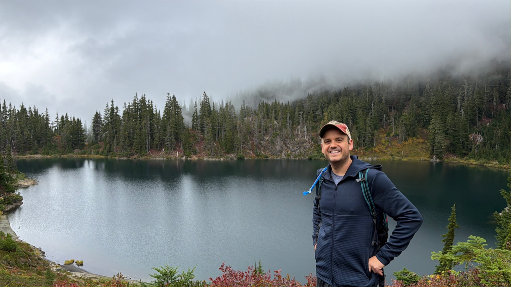

About me

I’m a Technical Program Manager (TPM) based in the Pacific Northwest, where I live with my wife, son, and daughter. In my professional work, I focus on building and scaling user-centric experiences, with a particular passion for mobile technology and cross-functional collaboration. I enjoy partnering closely with engineering and product teams to ensure alignment on priorities and to deliver solutions that make a meaningful impact for end users. Seeing products I’ve contributed to reach millions of people continues to be a key motivator in my career.
Outside of work, I’ve embarked on a journey to live a healthier and more balanced life. I began running in the summer of 2025 and have since completed my first marathon — and I continue to enjoy running. This has also sparked a deeper interest in holistic health, where I’m learning more about how fitness, nutrition, and overall well-being contribute to long-term growth and resilience.
Beyond running, I enjoy spending time with my family, exploring the outdoors, and traveling to new destinations. Whether it’s through my professional projects or personal pursuits, I’m always looking for opportunities to learn, improve, and take on challenges that expand my perspective.